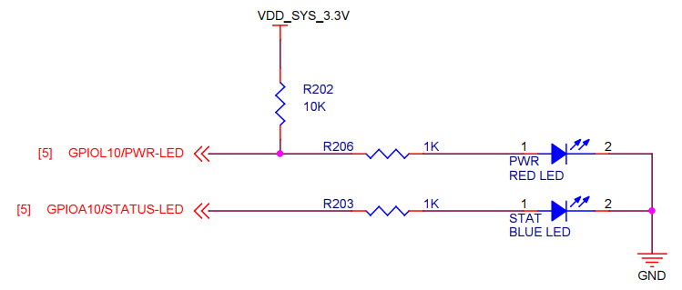
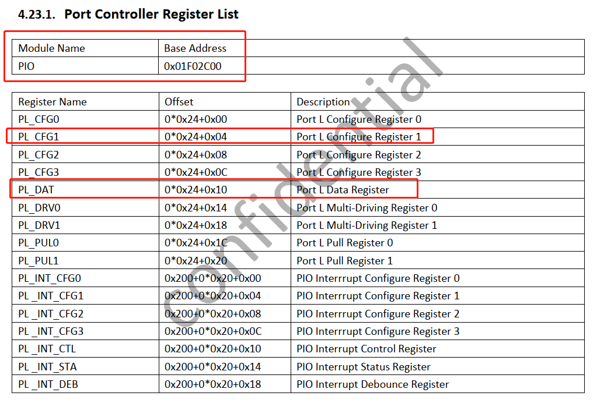
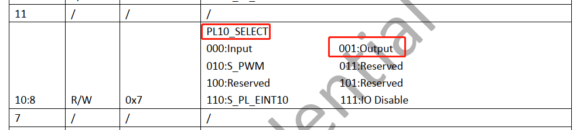
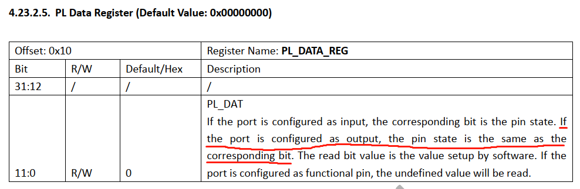

linux驱动之LED驱动
试验平台： NanoPi M1 全志H3

寄存器地址在全志H3的Datasheet 4.23节有介绍。



/*
* led.h : 定义ioctl的命令
*/
#ifndef __LED_H
#define __LED_H
#include <linux/fs.h>
#define LED_NUM_ON _IOW('L',0x3456, int)
#define LED_NUM_OFF _IOW('L',0x3457, int)
#endif
/*
* led_drv.c ： 实现led的驱动
*/
#include <linux/init.h>
#include <linux/module.h>
#include <linux/fs.h> // struct file_operations
#include <linux/slab.h> // kzalloc
#include <linux/device.h> // class_create和device_create
#include <asm/io.h> // ioremap
#include <linux/uaccess.h> // copy_from_user
#include "led.h"
/* 自定义设备结构体，用于存储设备相关的信息 */
struct led_device {
int dev_major;
struct class *cls;
struct device * dev;
int value;
};
/* 全局变量 */
static struct led_device *led_dev;
volatile unsigned long * gpl10_conf;
volatile unsigned long * gpl10_data;
volatile unsigned long * gpa10_conf;
volatile unsigned long * gpa10_data;
/* 自定义函数 */
static int led_drv_open(struct inode *inode, struct file *filp)
{
printk("-------^_^ %s-------\n", __FUNCTION__);
*gpl10_conf &= (0x1<<8);
*gpa10_conf &= (0x1<<8);
*gpl10_data |= (0x1<<10);
*gpa10_data |= (0x1<<10);
return 0;
}
static ssize_t led_drv_read (struct file *filp, char __user *buf, size_t count, loff_t *fpos)
{
printk("-------^_^ %s-------\n", __FUNCTION__);
return 0;
}
static ssize_t led_drv_write (struct file *filp, const char __user *buf, size_t count, loff_t *fpos)
{
int ret = 0;
printk("-------^_^ %s-------\n", __FUNCTION__);
ret = copy_from_user(&led_dev->value, buf, count);
if (led_dev->value)
{
*gpl10_data |= (0x1<<10);
} else {
*gpl10_data &= ~(0x1<<10);
}
return count;
}
long led_drv_ioctl(struct file *filp, unsigned int cmd, unsigned long args)
{
int num = args;
switch(cmd)
{
case LED_NUM_ON:
if (num!=1 && num!=2)
{
return -EINVAL;
} else if (num == 1){
*gpl10_data |= (1<<10);
} else {
*gpa10_data |= (1<<10);
}
break;
case LED_NUM_OFF :
if (num!=1 && num!=2)
{
return -EINVAL;
} else if (num == 1){
*gpl10_data &= ~(1<<10);
} else {
*gpa10_data &= ~(1<<10);
}
break;
default:
printk("unkonw cmd\n");
return -EINVAL;
}
return 0;
}
static int led_drv_close (struct inode *inode, struct file *filp)
{
printk("-------^_^ %s-------\n", __FUNCTION__);
*gpl10_data &= ~(0x1<<10);
*gpa10_data &= ~(0x1<<10);
return 0;
}
static struct file_operations led_drv_fops = {
.open = led_drv_open,
.read = led_drv_read,
.write = led_drv_write,
.release = led_drv_close,
.unlocked_ioctl = led_drv_ioctl,
};
/* 模块初始化和卸载 */
static int __init led_drv_init(void)
{
int ret = 0;
printk(KERN_ERR"-----------from led.ko : %s %s---------\n", __FILE__, __FUNCTION__);
led_dev = kzalloc(sizeof(struct led_device), GFP_KERNEL);
if (led_dev == NULL)
{
printk(KERN_ERR"kzalloc error\n");
return -ENOMEM;
}
led_dev->dev_major = 240;
ret = register_chrdev(led_dev->dev_major, "led_drv", &led_drv_fops);
if (ret < 0 )
{
printk("register_chrdev error\n");
ret = -EINVAL;
goto err_free;
}
led_dev->cls = class_create(THIS_MODULE,"led_cls");
if(IS_ERR(led_dev->cls))
{
printk(KERN_ERR"class_create error\n");
ret = PTR_ERR(led_dev->cls);
goto err_unregister;
}
led_dev->dev = device_create(led_dev->cls, NULL,MKDEV(led_dev->dev_major, 0), NULL, "led");
if(IS_ERR(led_dev->dev))
{
printk("device_create error\n");
ret = PTR_ERR(led_dev->dev);
goto err_class_destroy;
}
gpl10_conf = ioremap(0x01F02C04, 4);
gpl10_data = ioremap(0x01F02C10, 4);
gpa10_conf = ioremap(0x01C20804, 4);
gpa10_data = ioremap(0x01C20810, 4);
return 0;
err_class_destroy:
class_destroy(led_dev->cls);
err_unregister:
unregister_chrdev(led_dev->dev_major, "led_drv");
err_free:
kfree(led_dev);
return ret;
}
static void __exit led_drv_exit(void)
{
printk("-----------from led.ko : %s %s---------\n", __FILE__, __FUNCTION__);
iounmap(gpl10_conf);
iounmap(gpl10_data);
iounmap(gpa10_conf);
iounmap(gpa10_data);
device_destroy(led_dev->cls, MKDEV(led_dev->dev_major, 0));
class_destroy(led_dev->cls);
unregister_chrdev(led_dev->dev_major, "led_drv");
kfree(led_dev);
}
module_init(led_drv_init);
module_exit(led_drv_exit);
MODULE_LICENSE("GPL");
/*
* led_app.c ： 测试led驱动的应用程序
*/
#include <sys/types.h>
#include <sys/stat.h>
#include <fcntl.h>
#include <stdlib.h>
#include "led.h"
int main(void)
{
int fd = open("/dev/led", O_RDWR);
if (fd < 0)
{
perror("open");
exit(1);
}
/* v3
int on;
int count = 10;
while (count--) {
on = 1;
write(fd, &on, 4);
sleep(2);
on = 0;
write(fd, &on, 4);
sleep(2);
}
*/
// v4
int count = 10;
while(count--) {
ioctl(fd, LED_NUM_ON, 1);
sleep(2);
ioctl(fd, LED_NUM_OFF, 1);
sleep(2);
}
close(fd);
return 0;
}
linux驱动程序开发步骤总结
- 实例化全局的设备对象 -- kzalloc
- 注册设备号 -- register_chrdev
- 创建设备节点 -- class_create, device_create
- 映射内存资源 -- ioremap
- 实现 file_operations
gpio操作方法:
1, 直接操作gpio口对应的寄存器地址(看原理图---数据手册---地址--ioremap)
*gpc0_conf &= ~(0xff<<12);
*gpc0_conf |= (0x11<<12);
2, gpio库函数的接口---只需要知道gpio口的号码即可
gpio_request(unsigned gpio,const char * label)
// 将某个gpio配置成输出功能,并且直接输出高低电平
gpio_direction_output(unsigned gpio,int value)
// 将某个gpio配置成输入功能
gpio_direction_input(unsigned gpio)
// 将某个gpio配置成特定功能
s3c_gpio_cfgpin(unsigned int pin,unsigned int config)
//将某个gpio口内部上拉或者下拉
s3c_gpio_setpull(unsigned int pin,s3c_gpio_pull_t pull)
//获取到gpio的值
gpio_get_value
//设置gpio的值
gpio_set_value
//通过gpio口获取到中断号码
gpio_to_irq
gpio_free(unsigned gpio)
视频中gpio操作方法是基于S5PV210的，全志H3暂时还不知道怎么操作。